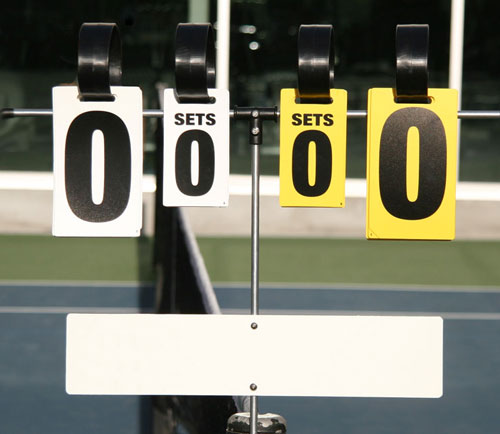

Rules
- 1. Points are scored in increments; 0(love), 15, 30, 40, and deuce.
- 2. Second serves are allowed.
- 3. Tennis can be played as singles or doubles.
- 4. Foot may not cross the back line during a serve or a foot fault is called.
- 5. Serves must sent across the court diagonally.
- 6. Serves are received on the deuce side of the court.
- 7. The alleys are not used during a singles match